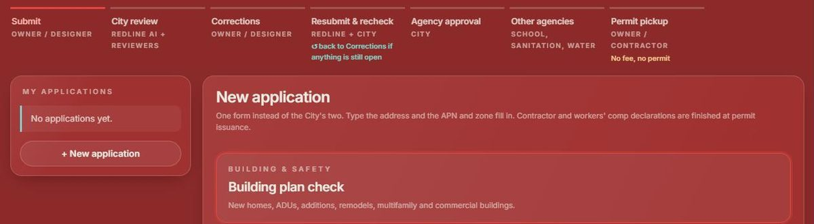
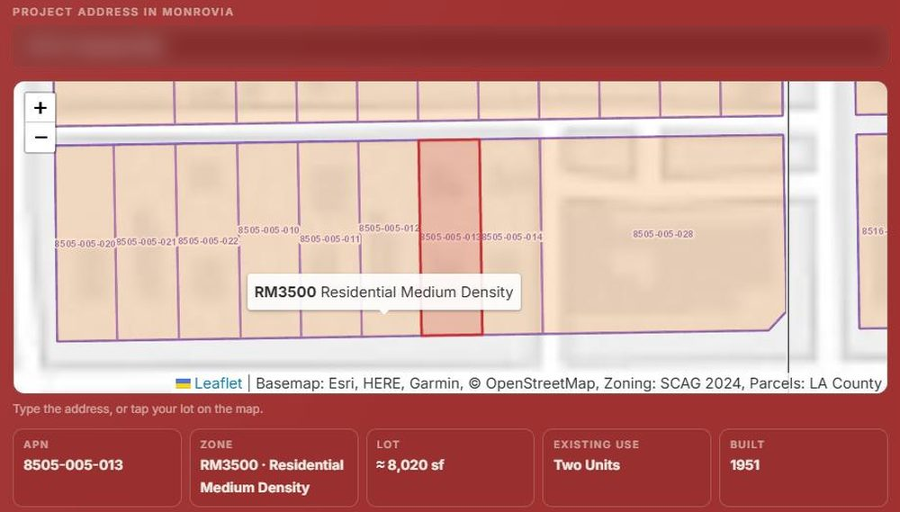

Plan check with fewer correction rounds.
Redline Permit is an online plan check portal built around your city's own codes. It gives every residential set a first read, circles each likely correction on the sheet it belongs to, and hands your plan checker a marked-up set instead of a blank one.
Your reviewers approve, edit or reject every comment. Nothing reaches the applicant without staff approval.
The first review now has to be the complete one.
California has put numbers on residential plan check. A city has a limited number of reviews and a clock on each, and applicants have new remedies when the clock runs out.
Summaries for orientation, not legal advice. Confirm current text at leginfo.legislature.ca.gov and with your city attorney, including AB 1621's effective date.
One portal from submittal to permit pickup.
Most correction letters repeat the same items: missing standard notes, unsigned sheets, energy and CALGreen measures, egress and separation details. Redline catches that layer before your plan checker opens the set, so staff time goes to the questions that need judgment.

Anatomy of one correction.
Every draft carries what a reviewer needs to decide in seconds: the spot on the sheet, the code section, the department and a priority.
Bedroom 2 window W3 is shown with a 48 in sill. An emergency escape and rescue opening may have a sill no higher than 44 in above the floor. Revise W3, or add a compliant opening, and note it on A2.0.
Illustration of the comment format.
- AThe number matches the red cloud on the sheet.
- BCode section, linked to the official text.
- CDepartment and sheet, for routing and the letter.
- DPriority: Critical, Major or Minor. Critical sorts first.
- ESource: AI draft, standard note or reviewer.
- FThe clip: the exact spot on the sheet.
- GThe reviewer's decision. Nothing goes out without it.
The first read, in four layers
Standard notes in the Monrovia example include:
- All sheets signed by the design professional
- Attic access 22 in by 30 in, location shown
- Safety glazing at hazardous locations
- Smoke and CO alarms, hard-wired, interconnected
- Roof covering ICC-ES report and cool-roof ID
- EV-ready raceway and 40 A circuit
- Electric-ready notes: water heater, cooktop, dryer
- GFCI and AFCI protection as required
- Surge-protective device at the service
- Pressure-balance valves at showers and tubs
- Dryer duct, 4 in metal, 14 ft max
- Hot water pipe insulation
The correction letter prints by department, critical items first, each with its clip, and closes with: "Every comment was reviewed and approved by City staff."
Rechecks that stay focused.
Anything still open goes back with the same numbers, so cycle 2 reads like a short checklist, not a new letter.
For reviewers and supervisors
Set up around your city, not a template.
Every city's procedure is different. Each portal starts from a jurisdiction profile built from your own code and handouts, and we do the setup.
- Confirm jurisdiction by APN and boundary map.
- Map your departments: Building, Planning, Fire, Police security, Public Works and outside agencies.
- Load the 2025 California codes (effective Jan 1, 2026), your local amendments and zoning standards.
- Build the rule pack: section, what to look for, severity, source, and "verified" or "needs verification."
- Your submittal checklists drive the completeness check. Profiles are re-verified every six months.

| Department | What it checks | Where the rules live |
|---|---|---|
| Building and Safety | CRC/CBC, electrical, mechanical, plumbing, Title 24 energy, CALGreen | MMC Ch. 15.04 Codes Adopted |
| Planning | Zoning, setbacks, height, FAR, parking, ADU, SB 9, compatibility, historic | MMC Title 17 |
| Fire | Fire code, sprinklers, access, hydrants, fire hazard zone construction | MMC Ch. 15.20 |
| Police (security) | Doors, locks, lighting, glazing near locks | MMC Ch. 15.08 |
| Public Works | Grading, erosion control, drainage and LID, undergrounding, driveways | MMC 15.28, 15.36, Title 12 |
Records, access and who decides.
The AI drafts and keeps the books. Your staff keep every decision, and your records stay where they belong.
Tested in the open.
We ran blind first reads on three real residential sets and scored them against the agencies' written correction lists: 75 comments from a contract plan checker for Monrovia and from LA County Building and Safety.
Most misses were standard notes. The standard-notes checklist was added in response; on the first set it now flags 6 of the 15 misses before any AI runs. A first read is a head start, not a replacement for a plan checker, which is why every draft waits for one.
Start small, on new projects.
Questions building officials ask
Does the AI approve or deny anything?
No. It drafts comments and keeps the bookkeeping. Reviewers approve, edit or reject every comment, add their own, and approve plan check.
Where do the drawings live?
In the applicant's own Google Drive or Dropbox. Redline keeps the link, the comments and small clips of the sheets.
Does anything change in how we collect fees?
No. The City collects its own fees, online or at the counter. Redline only sends fee reminders to applicants and staff.
What about our local amendments?
They are part of your city's profile. Each rule carries its source and is marked verified or needing verification, and profiles are re-verified every six months.
We already use a contract plan checker.
Redline hands them a marked-up set to start from, which can cut outside review rounds. The final decisions stay with whoever reviews for your city.
What does it cost?
The first month is free on new residential projects. After that we work out setup and ongoing cost together, based on what your team needs.